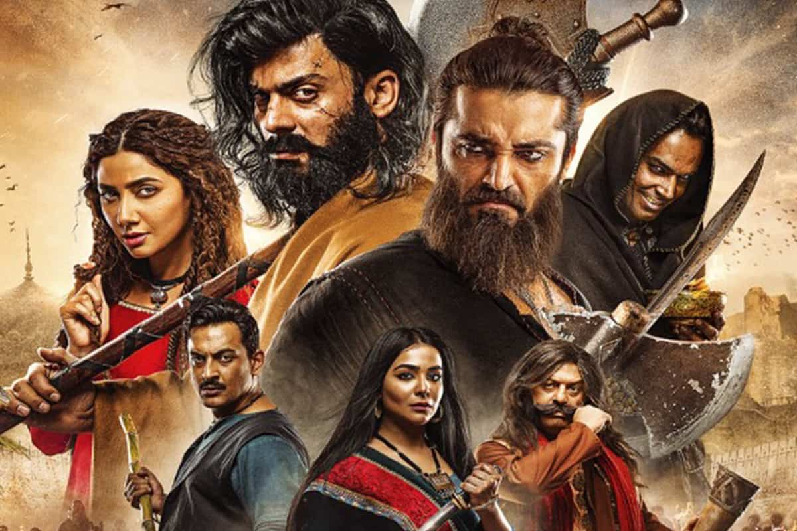

<!DOCTYPE html>
<html lang="en"></html>
<head>
  <meta charset="UTF-8">
  <meta http-equiv="X-UA-Compatible" content="IE=edge">
  <meta name="viewport" content="width=device-width, initial-scale=1.0">
  <title>Holy Grail Layout</title>
  <link rel="stylesheet" href="style.css">
  <link rel="stylesheet" href="https://fonts.googleapis.com/css2?family=Carrois+Gothic+SC&display=swap">
  <link rel="stylesheet" href="https://fonts.googleapis.com/css2?family=Poppins:wght@200;400;500;600;800&family=VT323&display=swap";
  >
  <link rel="stylesheet" href="https://cdnjs.cloudflare.com/ajax/libs/font-awesome/4.7.0/css/font-awesome.min.css">
</head>
<body>
  <div class="grid-container">
    <header id="main-header">
        <!-- the content of the header goes here -->
         <h1 id="logo">The Crit Club</h1>
         <nav>
            <ul id="nav-header">
                <li><a href="" class="nav-head">Home</a></li>
                <li><a href="" class="nav-head">Film</a></li>
                <li><a href="" class="nav-head">Books</a></li>
                <li><a href="" class="nav-head">Television</a></li>
            </ul>
         </nav>
    </header>
    <nav id="nav-sidebar">
        <ul id="nav-ul">
            <p><strong>Categories</strong></p>
            <li><a href="" class="navbutton">Film</a></li>
            <li><a href="" class="navbutton">Books</a></li>
            <li><a href="" class="navbutton">Television</a></li>
            <p><strong>Follow @thecritclub</strong></p>
            <a href="#" class="fa fa-facebook"></a>
            <a href="#" class="fa fa-twitter"></a>
            <a href="#" class="fa fa-instagram"></a>
        </ul>
    </nav>
    <article>
        <h2>The Revival of Maula Jatt</h2>
        <h3>[proceed with caution, this article is brimming with spoilers]</h3>
        
        <p>A new release has been making waves not only in Pakistan but internationally as well and it’s almost akin to watching Pakistani cinema rise from the ashes. Based on Maula Jatt (1979), which in turn was based on Ahmed Nadeem Qasmi's short story "Gandasa", The Legend of Maula Jatt (2022) just hit the theatres in October, and we’re absolutely stunned by the world Bilal Lashari has created. But Lashari’s ability to construct a world that cannot be placed in a specific place and time is both awe-inspiring and dangerous at the same time. There are a series of Maula Jatt movies, but I will primarily be focusing on the 1979 Maula Jatt starring Sultan Rahi and Mustafa Qureshi in direct comparison with the newly released, Fawad Khan and Hamza Ali Abbasi starrer, The Legend of Maula Jatt (2022). Using these two films, this article will aim to look at how cinematic choices and films have evolved in the last forty years. For convenience, I will be referring to the movies as MJ and LOMJ respectively for the rest of the article.</p>
        <p>Going back to the point of Lashari’s construction of an entirely different universe for the new LOML, I would like to highlight the various aspects in which the movie makes it very difficult for the viewer to contextualise it. The LOMJ seems to be floating in a fantastical land. With a much larger budget – so large that it is being claimed to be the most expensive Pakistani film ever made – LOMJ was able to work on creating elaborate set designs and costumes to create this exoticized version of Punjab. The palaces, the colosseum-like fighting ring, the jail, everything was highly stylised. And it was evident that the team worked really hard to create the looks of each and every character. Don’t get me started on the cinematography. Each frame felt deliberate; the lighting and the stunning use of chiaroscuro throughout the film was breathtakingly beautiful. In fact, I would say, watching MJ after watching the LOMJ was quite jarring because of this very reason; I had dived in expecting a similar world, if not exactly the same, but was met with a very realist depiction of a Punjab rooted deeply in politics. The conflicting portrayals of two different worlds in both adaptations were hard for me to reconcile. When I saw the police come in to arrest the main leads, I think my jaw went slack. It was almost funny watching those aggressive fighters being dragged off to the police station. You would think they’re above the law if you’re watching the LOMJ because they sort of are the law in that universe but in the 1979 MJ that isn’t really the case. The world has seen many changes in the forty-year gap that have undoubtedly contributed to the origin of the LOMJ in one way or another. And, as I sat there trying to wrap my head around how marrying the girl off to Maakha Natt was part of delivering justice, I realised that both films have cracks and fissures that are consistent with their respective socio-historical contexts.</p>
        <p>Among other things, I would also like to focus on the evolution of the male and female characters in the Maula Jatt universe and otherwise. One really evident change in the male character was that the new Maula Jatt seemed more in touch with his emotions. His masculinity and tough exterior did not prevent him from being vulnerable in moments that required it. An otherwise aggressive fighter, Maula Jatt did not shy away from voicing his fears of going on a journey far away from Mukho, nor did he remain stoic in the face of his brother’s unfortunate murder. Watching a big, burly man break down in tears at his brother’s grave was heart wrenching but also moving in ways that can only be felt and not reduced to words. Even Noori Natt, the villain, was vocal about his love for his little sister, Daaro, and about how he saved her from being buried alive. Watching him approach a murdered Daaro slumped against a wall, I sensed the impending doom that was about to ensue from his rage and anguish. On the other hand, watching the 1979 MJ felt like I was invited to a screaming match between two men. The machismo they exuded was way over the top.</p>
        <p>The romance between Maula Jatt and Mukho was a lot more developed in LOMJ, but I wouldn’t go so far as to say that it was completely overlooked in MJ. Mukho’s advances in the 1979 adaptation were just as bold, I would say, as in the 2022 release. This brings me to the portrayal of female characters in the films. For me, watching the older MJ after I’d seen the LOMJ was surprising in many ways, but I did not expect this to be one of them. And yet, it was. Mukho and Daaro were strong characters, both in their own unique ways. While Daaro was a fighter born in her brother’s shadow, Mukho was a bold woman who knew what she wanted and would do anything to get it. They aren’t the kind of women you would see bending to another’s will, rather you would expect for them to easily manoeuvre others into doing their bidding instead.</p>
        <p>The narrative of MJ has been altered and developed a lot more for the LOMJ. The two films follow almost completely different stories with some vague similarities. Moreover, the dreadfully long song and dance sequences in the 1979 version were completely zeroed out in the recent adaptation, save for one diegetic song that is sung by all the prominent characters in the film simultaneously in their own settings which I honestly found a bit absurd. Why not just have it play in the background as non-diegetic music instead? The lack of song and dance in the LOMJ saved the narrative coherence from being disrupted time and again like in MJ. However, the songs in MJ offered an interesting reading of the role of the genders. The otherwise aggressive fighter who would constantly be in a state of authority would suddenly be reduced to a passive and awkward figure. Mukho would be dancing around Maula Jatt while he would just stand there, not reacting to her advances. This reinforced the stereotypical portrayal of man: aggressive, reserved, and unemotional. The stories may differ on the surface but at ground level they’re both preaching about rising against injustice in society.</p>
        <p>The Legend of Maula Jatt (2022) was a cinematic experience and it set a benchmark in my mind that Maula Jatt (1979) did not manage to meet. Though, I would say it is a little unfair to judge the older adaptation based on the newer one, it’s just unfortunate that I ended up watching them in the order that I did. I’m sure Maula Jatt was a success for its own time, but it just wasn’t for me.</p>
    </article>
    <aside>
        <ul>
            <li>
                <p><strong>Published on:</strong></p>
                <p>11th September 2024</p>
                <p><strong>In the category:</strong></p>
                <p>Film</p>
                <p><strong>Written by:</strong></p>
                <p>Marium Ibrahim Ahmed</p>
            </li>
        </ul>
    </aside>
    <footer>
        <form>
                <p>Subscribe to our newsletter</p>
                <input type="email" id="email" name="email" placeholder=" Enter your email" required>
                <input type="submit" value="Subscribe">
        </form>
        <p id="copyright">&copy; TheCritClub 2024</p> 
    </footer>
  </div>
</body>
</html>